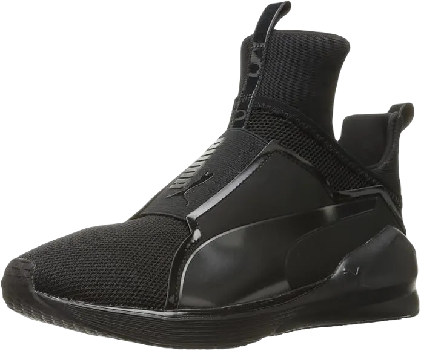
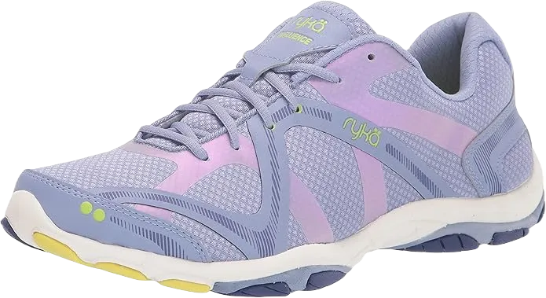
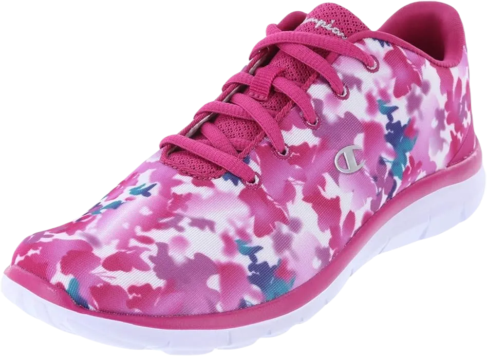
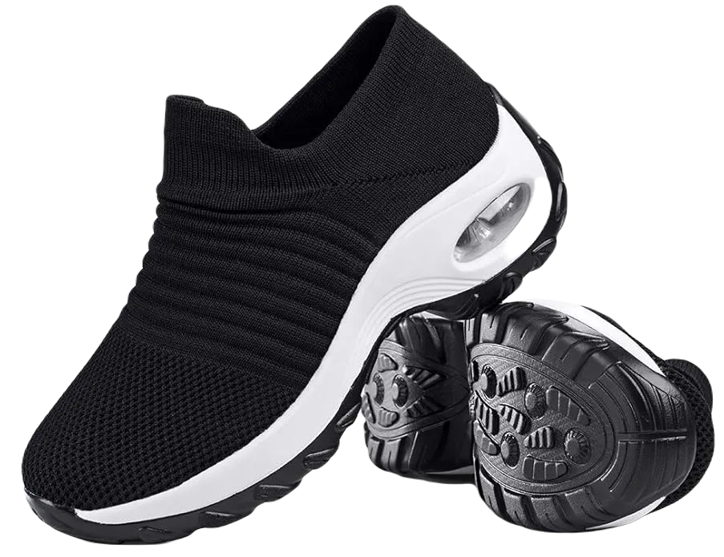
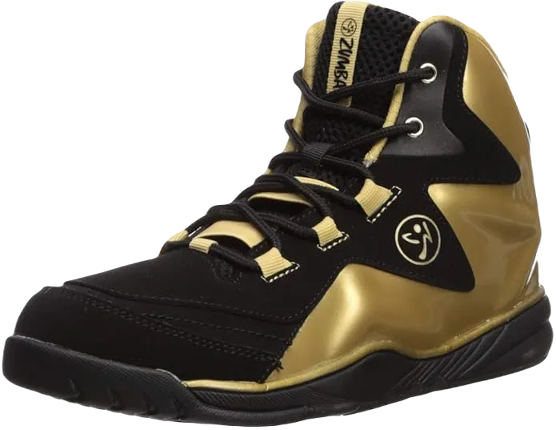

7 Best Zumba Shoes for Bad Knees 2024
Zumba fitness sessions are known for their energetic movements, excitement, and fun, attracting people for various reasons—whether it's to lose weight, learn something new, or as part of an upcoming project. However, if you suffer from knee issues, Zumba can be quite challenging due to the fast-paced footwork that may impact the knee joint. That’s why finding the best Zumba shoes for bad knees is essential.
Selecting footwear specifically designed for Zumba with knee concerns can feel overwhelming, especially with so many options available. Whether you're a seasoned instructor or a beginner, the continuous jumps and multi-directional movements put pressure on your knees, which can lead to discomfort or pain if you're not wearing supportive shoes. Wearing the wrong shoes not only risks foot injuries but can also lead to long-term foot deformities. To save you from endless searching, check out the list of shoes below that feature important qualities such as traction, stability, durability, and style, perfect for your Zumba classes.
-
#1
PUMA Women’s Fierce Core Cross
For dedicated Zumba trainers who spend hours leading classes, knee pain can become a frequent issue. That’s why having the right Zumba shoe is essential. This PUMA shoe, designed specifically for women with knee problems, offers the support and comfort you need.
Made from 100% Ariaprene with imported materials, the shoe features a rubber sole that provides comfort and stability. The lace-less, high-top design with breathable mesh helps keep your feet cool, minimizing sweat and the risk of slipping. Its well-padded tongue and collar make the shoe comfortable and snug around your feet.
In addition to its supportive design, the shoe allows for 360-degree movement, keeping both your heel and toe in ergonomic positions. PUMA offers this shoe in four vibrant colors, including red and black, which add a fun, lively touch to your workouts. -
#2
Ryka Women’s Influence
This company has crafted footwear with a clear focus on superior fit and enhanced comfort. With an athletic design, these shoes are perfect for Zumba training. The flexible outsole supports energetic moves and high jumps, allowing for freedom in every step. The lightweight, ergonomic structure ensures that your workouts are not only effective but also enjoyable.
Ryka training shoes for women feature a vibrant color scheme and stylish design, ideal for Zumba classes. Made from 100% fabric, they offer breathability and multi-directional flexibility. The rubber outsole ensures solid traction and stability, preventing slips and falls. Flex-foil and direct-fuse layers enhance support, while anatomical insoles provide cushioning for the heel and arch, making every step comfortable.
With a bouncy insole and footprint outsole design, these shoes offer excellent grip across various surfaces. The padded collar and tongue ensure extended comfort without irritation, making them suitable for both intense Zumba sessions and light walking. -
#3
Reebok Women’s Nano 9
.webp)
Cardio exercises and Zumba routines are anything but easy. They demand a lot of energy, sweat, and muscle engagement to achieve the desired results. Wearing the best Zumba shoes can make a significant difference, turning an intense workout into something enjoyable. The right shoes provide the necessary support for your feet, helping to ease any pain and enhance performance during vigorous movements.
The Reebok Women’s Nano 9 Cross Trainer shoe has been thoughtfully designed to meet these needs. Made from 100% textile fabric, its lightweight and durable construction ensures a comfortable fit, allowing for smooth and energetic movement. The imported materials and rubber outsole offer excellent traction, making it a reliable choice for fast-paced workouts.
This shoe's low-top arch design is especially beneficial for those dealing with bad knees, providing extra support and reducing strain. With its lightweight feel and durable structure, the Nano 9 Cross Trainer is perfect for women looking to stay active without compromising on comfort or stability. -
#4
Champion Women’s Pink Floral Gusto
For Zumba and cardio workouts, choosing the right shoe is essential. If your footwear lacks proper traction and grip, your entire session can turn into a frustrating experience. Thankfully, the Champion Women’s Pink Floral Gusto Sneaker in 10 Regular delivers top-notch performance and won’t disappoint. This shoe stands out with its quality and functionality, offering the perfect blend of style and durability.
Crafted from synthetic and mesh fabric, along with a reliable rubber sole, this shoe ensures powerful stability. Its snug fit is enhanced by soft and elastic cushioning, providing comfort during intense workouts. This Champion sneaker is particularly well-suited for gym sessions and similar activities, with a low-cut, ergonomic design that allows for seamless multi-directional movement.
The rubber outsole features a special pattern designed to perform well on a variety of surfaces. Its lightweight, non-marking design makes it flexible enough for slippery floors. Additionally, the soft lining and breathable fabric on the upper part of the shoe promote excellent ventilation, keeping your feet cool and comfortable during exercise. -
#5
Zumba Women’s Air Classic Remix

Good footwear is essential, especially when dealing with knee problems, making a foot-friendly shoe all the more crucial. The Air Classic shoes have become a top choice for many due to their stylish appearance and exceptional comfort. The Zumba Women’s Air Classic High Top Shoes Dance Fitness footwear stands out for its advanced technology, which enhances both comfort and performance during various foot movements.
This shoe is thoughtfully designed with Zumba in mind, offering an outsole with well-placed patterns to provide excellent grip. The Z-Slide technology ensures superb traction and stability across different surfaces, making your workouts smoother. Additionally, the removable PU insoles can easily be replaced with OrthoLite insoles if needed, ensuring personalized comfort.
With mid-arch support, this shoe aids in maintaining control and stability during walking and running. The high-top design provides a snug fit, while the padded tongue and enhanced cushioning offer added comfort. The boot-like style gives this footwear a unique, trendy look, making it a reliable choice for both fitness and style. -
#6
Mesh Slip-On Air Cushion
For intense workouts like Zumba training and cardio sessions, it's essential to have the right gear, especially when dealing with knee pain or joint issues. A key element is finding the best Zumba shoe that provides both comfort and stability, ensuring your movements are smooth and pain-free throughout the session.
This particular shoe offers a sleek, high-class design with subtle yet attractive colors. Its mesh fabric ensures proper ventilation, keeping your feet cool and dry even during rigorous exercise. The textile uppers are both flexible and breathable, making them ideal for summer workouts, allowing you to stay comfortable without any discomfort.
The standout feature of this shoe is its incredible flexibility. Equipped with an MD+ Air Cushioning sole, it delivers precise foot placement on any surface. This flexibility allows for multi-directional movement without causing strain or injury, making it the perfect companion for those high-energy Zumba sessions. -
#7
Zumba Energy Boom High
For those with bad knees, activities like Zumba can seem almost impossible. However, the Zumba Energy Boom High Top Athletic Shoes Dance Gym Workout Sneakers for Women offer a great solution. These shoes are designed specifically to help alleviate the strain on your joints, making Zumba more manageable and enjoyable.
With a high-quality rubber outsole and resilient insole, these sneakers provide excellent support for springy jumps and stable footwork. The high-top design offers added support to the ankles and heel, keeping you cozy during colder weather. Additionally, the PU removable insole is durable and easy to replace, allowing for added customization based on your comfort needs.
The Z-slid technology in these sneakers enhances grip, ensuring steady movements without slipping. From style to functionality, this sneaker is an excellent choice, offering both a trendy look and high performance. It’s no wonder many Zumba trainers have praised these shoes in their reviews for their reliability and support.